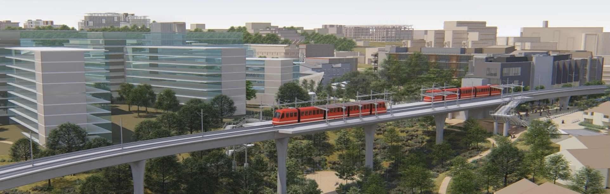
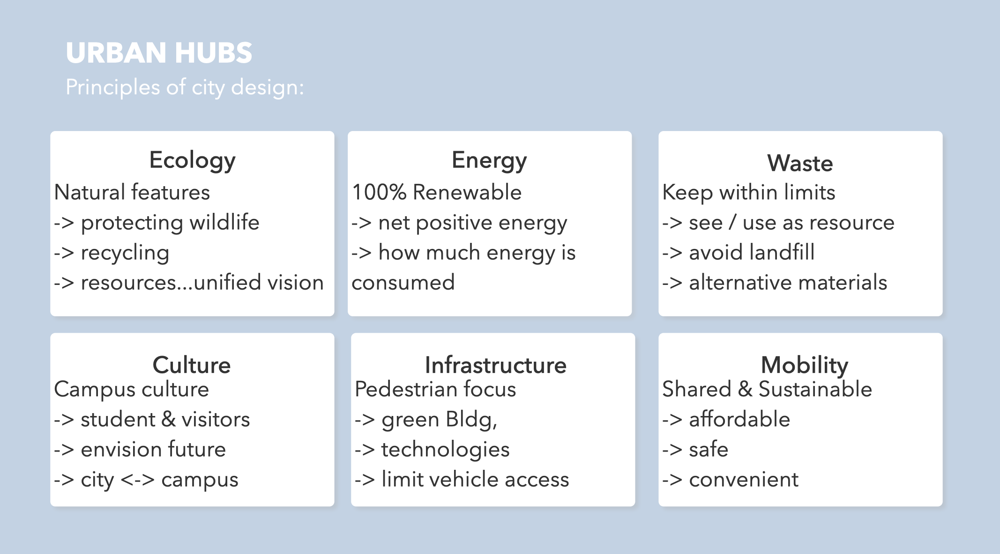
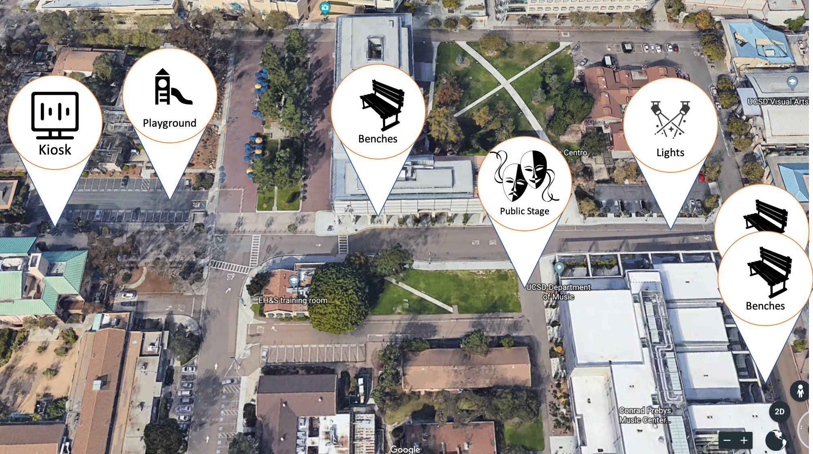
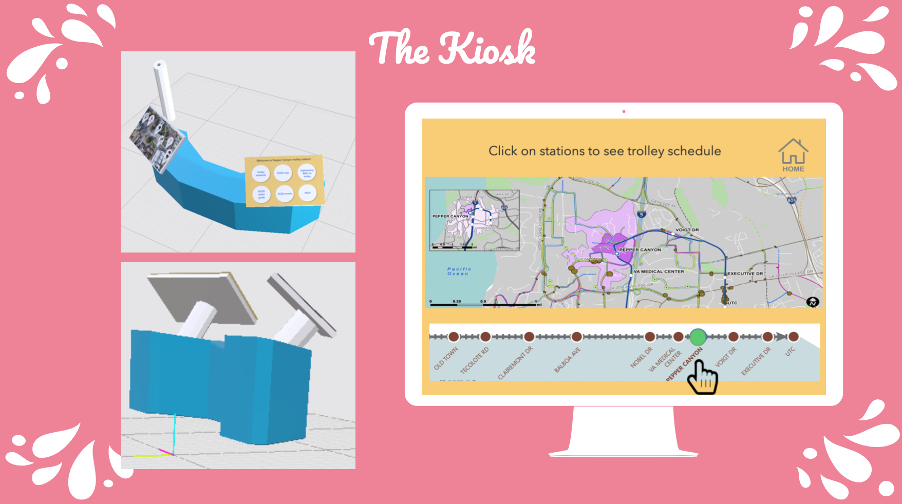
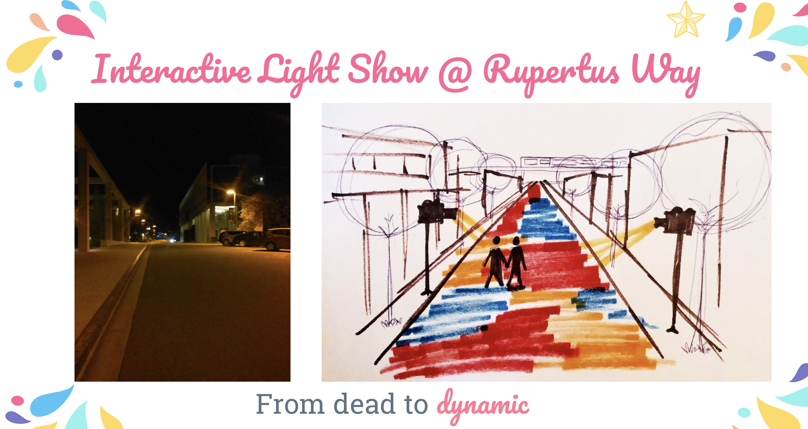
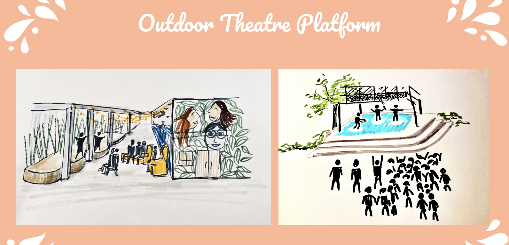
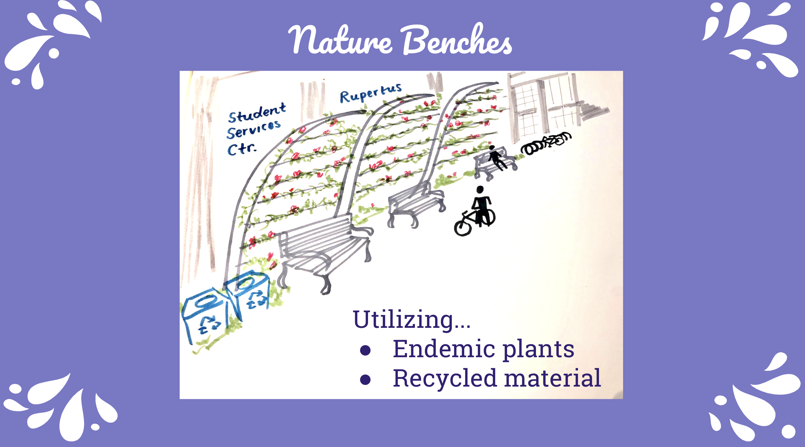

Initiative to activate UCSD campus

The PEPPER CANYON MOBILITY HUB DESIGNATHON focuses around the Pepper Canyon trolley station, which aspires to be a ecologically, socially, and technologically friendly mobility hub. With the station right on UCSD campus, we wanted to find a way to activate the surrounding campus spaces to liven up the previously utilitarian campus.
Greg Boscaiu, Zijian Ding, Sophie Siemsgluess, Kristi Lin, Xirui He, Priyan Vaithilingam
Is UCSD socially dead?
Our team surveyed over 80 UCSD students about what they think:
We wanted to change this notion and celebrate our cultural and intellectual diversity and simultaneously increase meaningful social interactions. From this research process, we found an opportunity for placemaking around Rupertus Way which extends from the Pepper Canyon station to Library Walk.
We took notes on essential elements of urban design that we might want to bring to the Pepper Canyon Station.

After doing several rounds of "Crazy 8" brainstorming activity for how to activate Rupertus Way, we voted on what we like the best and eventually narrowed down to five elements:





© 2019 Xirui He